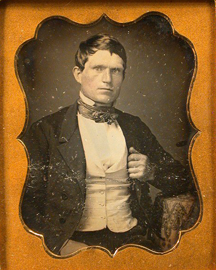

MERCHANTS & PERSONALITIES
of COLUMBIA.
1850 to 1870

© CSHP collection.
Merchant in Columbia - c1850s.


This is just a partial list of Merchants and interesting Personalities of Columbia. This list started as a link from the cemetery listing of certain individuals who made themselves known. Some additional research has been added.
BACON, Pyam (Pike) Bartlett. - Born in Ohio 1834 - Died 1899
BARKER, James J. - Born in Tennessee c1827 - Died in Columbia 1860
BIXEL, Joseph - Born 1818 - Died 1887
BRADY, Hurbert E. - Born 1879 - Died 1954
BRAINARD, Benjamin Marcellus - Born 27 October 1825 - Died 29 June 1856
BROWN, H.N. - Born 1820 - Died 1857
BONNELL, John Thomas - Born in New York 1821-22 - Died in San Francisco 1895
CARLOS, Martha - born in 1833 - Died 1876
DAVIS, Rudolphus Clay - Born in Indiana 16 Dec 1845 - Died in San Francisco 13 Dec 1933
DE NOILLE - Early family to arrive in Columbia - 1852
DONDERO, Frank John - Born on Yankee Hill 12 Oct 1876 - Died 13 May 1970
JOHNSON, Per - Born in Denmark/Sweden 1825 - Died 19 Oct 1878
KELLY/KELLEY - Family of merchants.
MEYSAN, Charles - Born 1826 - Died 1902
NASH, John W. - Born 1852 - Died 1951
NAPOLEON, George N. - Born 1851 - Died 1934
O'HARA, William "Billy" - Columbia's Black Chef.
PECHAUD BROTHERS - Columbia's French Quarter.
REBSTOCK, John F. "Peg Leg" - Born c1823 - Killed 1871
SMITH, Rose "Ah Fah" - Columbia's Chinese Darlin'.
TIBBITS, Lyman Childs - Born 1843 - Died 1928
TRASK, George Mellen - Born 1859 - Died 1930